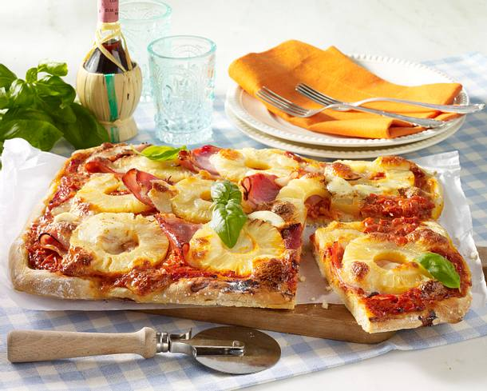

Pizza Hawaii

Description
The Hawaii Pizza is a delicious meal. Whereas the Pizza itself is as meal originated in italy, the Pizza Hawaii was developed in canada.
The toppings create a tropical flavour, which is the reason for its naming.
Pineapple, ham, cheese and tomato sauce are placed on a Pizza dough and than backed. At the end one can enjoy a delicious meal.
Ingredients
- 2 tbsp olive oil
- 4 tbsp tomato paste
- 1 onion
- 150 g ham
- 250 g grated cheese
- 1 pinch of pepper
- 1 can of pineapple
- 1 can corn
- 2 tbsp pizza seasoning
- 1 pinch of pepper
- 1 pinch of salt
Ingredients for the dough
- 0.125 l warm water
- 1 pk yeast
- 500 g flour smooth
- 1 pinch of sugar
- 2 tablespoons olive oil
- 1 pinch salt
Steps
- For the pizza dough, crumble yeast into the flour. Add salt and sugar and knead briefly. Now slowly pour in the water and olive oil and knead until the dough separates from the edge.
- The dough must now rest, covered, for half an hour. Then put some flour on the work surface and roll out the dough as big as the tray is. Brush the tray with oil and place the dough on it. Poke holes with a fork.
- Brush the dough with tomato paste and spread the olive oil on top. Top with sliced onion, followed by the ham and half of the grated cheese. Season with salt and pepper.
- Now spread the pineapple and the remaining cheese on top and sprinkle with pizza seasoning. Now bake at 230 degrees bottom heat for 15 minutes.
Enjoy your homemade Hawaii Pizza!